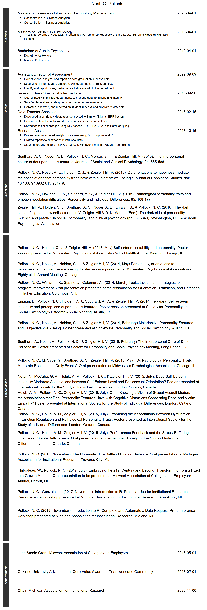

I’m excited about Data: extracting, processing, analyzing, reporting, dashboarding, and everything in between. For the past 2.1161996 years, R has been my tool of choice. However, I have experience with a variety of sowftware, languages, and projects. You can read about my professional experience in my CV here. And just for fun, I recreated my CV below using ggplot!
You can also find me on LinkedIn: https://www.linkedin.com/in/noah-pollock-5b5804157/
cv_df <- data.frame(
section = c(
rep("Education",3)
,rep("Vocation",3)),
text = c(
"Bachelors of Arts in Psychology",
"Masters of Science in Psychology",
"Masters of Science in Information Technology Management",
"Research Assistant/Data Transfer Specialist",
"Research Area Intermediate",
"Assistant Director of Assessment"),
date = c("2013-04-01",
"2015-04-01",
"2020-04-01",
"2012-04-01",
"2016-01-28",
"2016-09-28")
) %>%
group_by(section) %>%
mutate(y = 1:n())## Warning: package 'bindrcpp' was built under R version 3.4.3You can also embed plots, for example:

Note that the echo = FALSE parameter was added to the code chunk to prevent printing of the R code that generated the plot.